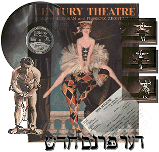

This is an archived copy of History Matters, provided by the Roy Rosenzweig Center for History and New Media. To explore this content in a new interface, visit Who Built America?.

American Variety Stage: Vaudeville and Popular Entertainment, 1870–1920
http://memory.loc.gov/ammem/vshtml/vshome.html
Created and maintained by the Library of Congress.
Reviewed July 2004.
Like a good vaudeville show, the Web site American Variety Stage: Vaudeville and Popular Entertainment, 1870–1920, tries to present something for everyone. It succeeds in much of this effort, particularly with introductory essays and indexing that illuminate connections among variety theater, gender, urban life, and other important themes in American history.
A variety show presents separate acts to form a complete bill of entertainment. This site, part of the Library of Congress American Memory project, opens with an introduction that links from the phrase “The American Variety Stage” to a valuable essay on the place of variety theater in American culture and society from 1870 to 1920. A link within this entry at “forms of variety theatre” explores vaudeville, burlesque, minstrelsy, musical comedy, and more.

The core of the site is divided into six sections: Houdini, Theater Playbills and Programs, Sound Recordings, Motion Pictures, English Playscripts, and Yiddish Playscripts. A collection of teaching aids, Collection Connections, is also included. An additional feature, the Library of Congress exhibition “Bob Hope and American Variety,” is listed less visibly on the home page. This is a shame: the objects and interpretive information displayed—scripts, joke books, material from Hope’s appearances in vaudeville, radio, film, and television—dramatically illuminate the relationship between one performer’s career and the larger evolution of show business. In a similar vein, the Houdini section offers a shorter, less ambitious exploration of one performer and his times through an introductory essay, photographs, and memorabilia.
The other main sections of the site contain scripts, recordings, motion pictures, playbills, and programs. They are saved from being collections of show business artifacts by a useful cross-indexing system. The 1896 comic sketch “The Alimony Club,” for example, links in zany vaudeville fashion to related topics such as marriage, theatrical life, crime, children, and songs.
Fruitful research possibilities appear in entries that cross different media. The program for the play McFadden’s Row of Flats, from 1899, says the production is “based upon the stories written by E. W. Townsend for the New York daily papers,” with characters “drawn from R. F. Outcault’s illustrations in the same paper.” An online search for the script in the Library of Congress’s general collections came up empty but produced a rich and detailed Outcault “Yellow Kid” cartoon on the start of football season in McFadden’s Row of Flats. Such simple research could open an inquiry into the relationships among variety theater, journalism, and cartooning.
American Variety Stage also suggests new opportunities for online resources in popular culture. The bibliography in Collection Connections could be updated. While the section on Yiddish theater is useful (even though it admittedly contains few scripts short enough for vaudeville), some translations of the Yiddish scripts would help them resonate better with the rest of the site and enable monolingual visitors better to compare English and Yiddish productions. It would also be helpful to connect the site more visibly to the Library of Congress’s African-American Sheet Music, 1850–1920, and its illuminating subsection, “The Development of an African-American Musical Theater, 1865–1910.”
Having opened with a strong bill, American Variety Stage deserves an opportunity to expand its range of acts. Just like a solid vaudeville show, this site leaves a visitor calling out for more.
Robert W. Snyder
Rutgers University
Newark, New Jersey